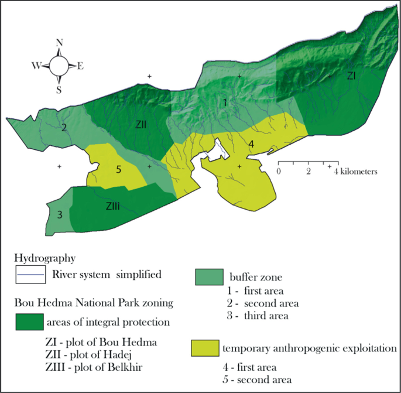

Bouhedma National Park was designated in 1980 and later enlarged as part of the international 30×30 agenda — the global commitment, adopted under the UN Convention on Biological Diversity, to protect 30 % of the planet's land and sea by 2030.
The park's founding principle is to integrate human communities and wildlife inside one managed landscape. The park combines: Zoning: every hectare has one declared use — closed conservation core, fenced reintroduction grounds, seasonal grazing area, or corridor. Time sharing: where the same ground is used by both worlds (water points, pasture), it is used by each in its own agreed season. And connectivity: the wild ranges are linked by corridors so that gazelles, oryx and hyenas can move without ever crossing a village or a field.
The part structure includes areas of integral protection, comprising the ZI plot of Bou Hedma, ZII plot of Hadej, and ZIII plot of Belkhir, which serve as absolute sanctuaries for native biodiversity and endangered species under a principle of strict inviolability where human interference is minimized to allow natural ecological processes to unfold.
Surrounding these core refuges are the buffer zones, designated as the first, second, and third areas, which act as an ecological shield governed by the principle of controlled permeability to absorb environmental pressures and accommodate low-impact monitoring, scientific research, and controlled passage.
Finally, the landscape incorporates zones of temporary anthropogenic exploitation, specifically the first and second areas highlighted in yellow, which function under a principle of adaptive sustainability to accommodate traditional resource use and managed agro-sylvo-pastoral activities under strict oversight, thereby balancing ecological preservation with the socioeconomic livelihoods of local communities.
Reference: Riahi, O. (2021). Contribution of GIS in the Environmental Monitoring of a Tunisian Biosphere Reserve (Bou Hedma National Park). In: Khebour Allouche, F., Negm, A.M. (eds) Environmental Remote Sensing and GIS in Tunisia. Springer Water. Springer, Cham. https://doi.org/10.1007/978-3-030-63668-5_15
